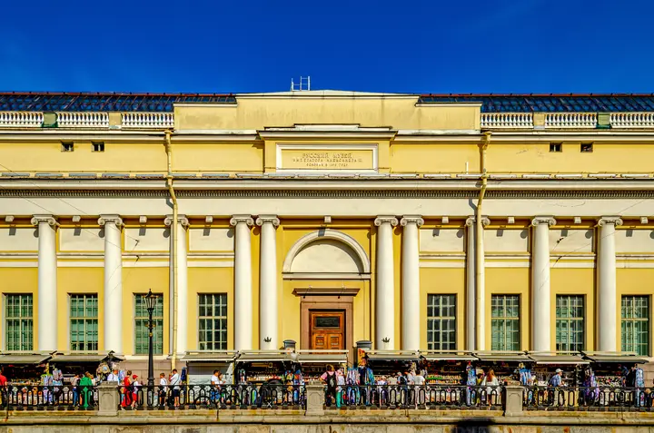

Фото: Никонико962, CC BY-SA 4.0 · Wikimedia Commons
Музей · Центр
Корпус Бенуа Русского музея
Русский XX век: Малевич, Петров-Водкин, Кандинский и крупные временные проекты в отдельном здании.
- ₽ · до 1 500 ₽ на человека
- Новое в каталоге
- в 1 плане
Позвать сюда: Корпус Бенуа Русского музеяОткрыть в каталоге: Корпус Бенуа Русского музеяМаршрут до места: Корпус Бенуа Русского музея
Адрес и детали
- Адрес
- Инженерная ул., 2-4
Открыть на Яндекс Картах (в новой вкладке) - Метро
- м. Невский проспект
- Район
- Центр
- Цена
- до 1 500 ₽ на человека
- Проверено
- работает — проверили в октябре 2026
Планы с этим местом 1
- Корпус Бенуа Русского музея · Музей · м. Невский проспект
- 1 минута пешкомКафе Бенуа · Кафе
Русский XX век в корпусе Бенуа — Малевич, Петров-Водкин, Кандинский, — а потом красивые десерты в кафе прямо в колонном зале музея.
Открыть план: Малевич и десерты в колонном залеПозвать сюда: Малевич и десерты в колонном зале
Фото: Никонико962, CC BY-SA 4.0 · Wikimedia Commons

Входит в подборки
Похожие рядом


Что ещё рядом


Как позвать
- Выбери план, место или событие — в карточке адрес, цены и маршрут в Яндекс Картах.
- Нажми «Позвать сюда» — соберётся приглашение-игра для свидания или голосование для компании.
- Отправь ссылку в любой мессенджер: тебе ответят, а компания отметит, куда и когда может. Бесплатно и без регистрации.